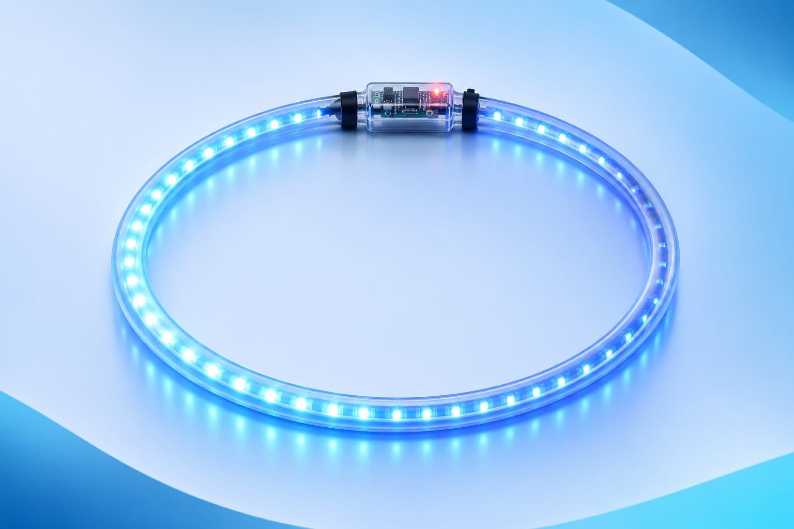

Teams take zones
Players contest nodes across the field and shift control as the game unfolds.
Dominion tracks capture time across multiple zones and turns it into a live score. Teams can follow the game as it unfolds, while field staff get a clear tool to help coordinate play.
Arenatec presents Dominion as the first airsoft scoring panel based on capture time across multiple zones.
Dominion turns zone control into a visible competition for teams and makes the game easier for field staff to follow.
Players contest nodes across the field and shift control as the game unfolds.
The system tracks each team's control time across the play zones.
The Score displays the accumulated standings so teams and staff can follow the game.
Dominion combines a scoring display, capture zones and light signals to show game status across the field.
The scoring panel shows each team's progress based on capture time accumulated across the nodes.

A Node is a capture zone in the field. Dominion supports up to sixteen zones.

The Beacon's circular light shows which team currently controls its associated node.

The S1 Bomb is an integrated Dominion module that simulates a bomb device and performs the role of an RFID key fob. When the countdown reaches zero, it sounds a loud alarm and captures a Node. Robust, simple, practical and economical, it is designed to make the game easy to understand without lengthy briefings.
Choose quantities for Dominion modules to see the subtotal and discounted total.
Battery not included (the system is powered via USB).Shipping is included on orders over €200.
Dominion gives teams a shared reference for the game and helps staff coordinate play.
Tell us how you run games and we'll help you consider which modules fit.